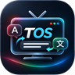

Translate
OS
by Emrah AYDIN
Translate
OS
Kendi ücretsiz Gemini anahtarınla TranslateOS günlük sınır olmadan çalışır.
Telefonunla bu QR kodu okut.
Açılan sayfadaki bağlantıdan ücretsiz anahtarını al.
Anahtarı yapıştırıp
TV'ye kaydet
'e bas.
Telefon ve TV aynı Wi-Fi ağında olmalı. · Geri: kapat
Translate
OS
OK
Menüyü aç / kapat
1–4
HDMI girişini değiştir
Geri
Çeviriden çık
Mavi
Kendi Gemini anahtarını gir
@emrahaydin.es
github.com/emrah-aydin/TranslateOS